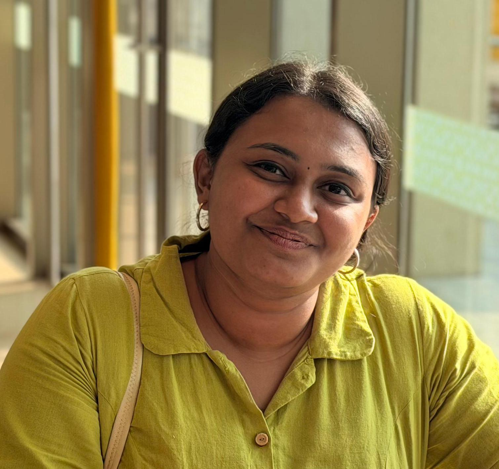

Final-year B.Tech AI & ML · Chinmaya Vishwavidyapeeth · CGPA 9.32
Agentic AI · Generative AI · ML Systems · Research

Final-year AI/ML student building end-to-end intelligent systems, from local-first agents with tool orchestration and evaluation to deployed ML pipelines across computer vision, NLP, and reinforcement learning.
My work spans agentic AI, trustworthy LLMs, healthcare, ocean science, and sustainable technology. I enjoy turning open-ended problems into tested prototypes, sharing reproducible results, and presenting research at national and international forums.
Explore my work in agentic AI, machine learning, and software systems.
Local-LLM incident response: monitoring, anomaly detection, ReAct investigation, remediation tools, and live dashboard.
Private, local-first task assistant with browser automation, OCR receipts, expense splitting, memory and scheduled workflows.
Research comparing DSPy MIPROv2 prompt optimization with QLoRA fine-tuning for agentic tool use.
Open-access 60-pair ambiguity benchmark evaluating confidence and safe clarification decisions in tool-using agents.
Local-first LLM prompt evaluation. Compare models side-by-side with readability and sentiment scoring.
Fully local, privacy-first AI data visualization. Chat with your CSV in plain English. Zero cloud. LAN mode for teams.
Voice-first AI task and calendar app. Speak naturally — AI extracts tasks and sets smart reminders.
AI step-by-step project mentor for engineering students. Roadmaps, debugging, deployment guidance.
Real-time gesture drawing using only a webcam. 21 hand landmarks. Built in 2–3 hours.
Context-aware text ↔ emoji using NLP. Sentiment-aware, multi-language support planned.
Click any role to see photos, details & highlights
Mentroid AI & ML Services · Appointed Oct 2026
Project-based AI research, development, planning and execution alongside the leadership and engineering team.
Cashcrow · Jul–2026 (Completed)
Researched, benchmarked and optimized computer vision workflows for waste detection, localization, segmentation, classification and edge use.
INCOIS · May–Aug 2026
Developed dual-task PatchTST for sea-state classification and 72-hour wave forecasting on ERA5 data; compared against Mamba.
IEEE EdSoc Kerala Chapter · 2025–26 (Completed)
Contributed to chapter-level initiatives and cross-institutional collaboration; received a Certificate of Appreciation.
Nautical Navigators · Sep 2024–Mar 2025
Led autonomous underwater vehicle integration and mission planning for an all-women team ranked 12th internationally.
Chinmaya Vishwavidyapeeth · Jan 2024–Mar 2026
Founded and chaired the student branch; organized workshops, technical events and volunteer initiatives.
Chinmaya Vishwavidyapeeth
Coordinated event operations and participant experience for a 24-hour software hackathon.
Click any paper to see presentation photos & access the full paper
Open-access single-model ambiguity and confidence calibration study
Controlled DSPy MIPROv2 vs. QLoRA comparative research
Rama Katha Conclave 2026 · Best Paper Award
Harvest Journal, Vol. VI · ICSSR Sponsored National Seminar · Bishop Kurialacherry College, Kottayam
ICCET 2026 · Hybrid · India × Samarkand State University, Uzbekistan
ICDRLDS-26 · International Conference on Deep Reinforcement Learning · Trivandrum
ICDTEBM 2026 · Kerala Startup Mission, Kochi
IIOSC-2025 · INCOIS, Hyderabad · International Indian Ocean Science Conference
Best Paper for “Mapping the Many Voices of Rama: An NLP Atlas for Regional Ramayana Traditions.”
Won the Ideathon with Vayuśuddhi, a MOF nanofiber and ozone-based air purification concept for rural communities.
Technical lead of the all-women Nautical Navigators team representing five Indian institutions.
Vayuśuddhi selected for inclusion in Rural Development Innovations in Asia and the Pacific; planned unveiling at the Nov 2026 Colombo conference.
Selected for and participated in the community hackathon at Jain University, Kochi.
Recognized for completed chapter internship and contributions to collaborative initiatives.
Felicitated by the Director of IIT Madras; work evaluated by a former NIOT Director.
Presented AI-enhanced coral reef habitat mapping around Kavaratti Island.
Built a temperature-dependent Arrhenius spoilage kinetics model validated against experimental K-value data from KUFOS.
Open to AI/ML engineering, agentic AI, research collaborations, and technically ambitious projects.
AI/ML · Agentic AI · Research · 2026–2027